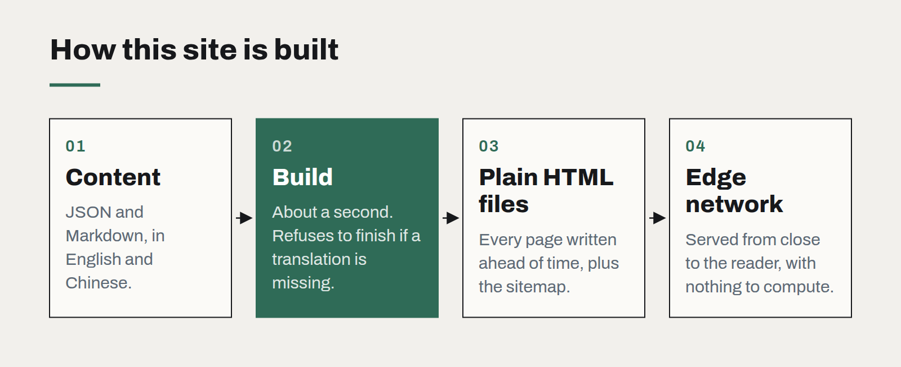

Static first: why our own site ships as plain files
No server, no database, no framework runtime — and pages that load before you finish blinking. Static generation is the most underrated architecture for most business websites.
The website you are reading is a folder of plain HTML files. A small script reads our content — case studies, these articles, the homepage copy in two languages — and writes out every page ahead of time. There is no application server, no database and no framework running in the visitor's browser. The whole build takes about a second.
We chose this deliberately, and we recommend the same approach to many clients whose websites are, like ours, mostly content that changes a few times a week rather than a few times a second.
What static buys you
- Speed. A pre-built page is served straight from a content delivery network close to the visitor. There is nothing to compute, so the first byte arrives almost immediately and the page is readable before any script runs.
- Security. With no server-side code and no database behind the site, most common attack paths simply do not exist. There is nothing to inject into and nothing to patch on a Tuesday night.
- Cost. Hosting static files costs little or nothing at typical business traffic levels, and it does not rise sharply when a post is shared widely.
- Reliability. A static site keeps working when an API is down, when a plugin is abandoned, or when the developer who built it has moved on.
- Longevity. HTML written today will open in a browser in twenty years. Very few application frameworks can promise the same.

"But we need…"
Most of the features people assume require a dynamic site do not.
- Forms can post to a hosting platform's form handler or a small serverless function.
- Search across a few hundred pages can run in the browser from a pre-built index.
- Multilingual content is simply two sets of generated pages with the right
hreflanglinks between them. - Editing by non-developers works well with a headless content system that triggers a rebuild on publish, or — for small teams — with content in structured files and a simple review process.
- Interactive pieces, such as calculators, configurators or even real-time 3D, can be added to specific pages without making the whole site dynamic.
When static is the wrong answer
If the content is personalised per visitor, changes by the second, or depends on who is logged in — a customer portal, a live dashboard, a shop with real-time stock — you need a server. Even then, the marketing and content pages around the application are usually better built statically and kept separate.
How we build them
Our own generator is a few hundred lines with no dependencies: content in JSON and Markdown, templates as plain functions, a validation step that refuses to build if a translation is missing, and a sitemap written on every run. It is deliberately boring. Anyone who can read JavaScript can change it, and there is nothing to upgrade.
For larger sites we use an established static site generator instead. The principle is the same: do the work once, at build time, rather than on every visit. Most business websites are read far more often than they are written, and their architecture should reflect that.
Choosing a frontend framework is mostly choosing a team
The technical differences between mainstream frameworks have narrowed. What still differs is who you can hire, how long the code will be supported, and how much of it you actually need.
Observability for teams of five
You do not need a platform team to know what your software is doing in production. Four signals, one dashboard and a rule about alerts will cover most of what a small team needs.
Postgres is the default database, and it should be
Documents, search, queues, vectors for AI retrieval — one well-run Postgres now covers what used to take four products. The reasons to add a second database are fewer than they were.